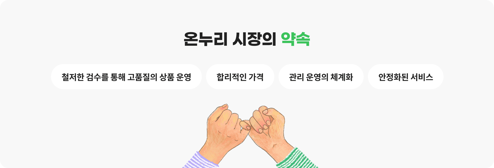

온누리 시장 서비스는?
전국 전통시장에 관한 다양한 정보와 다양한 컨텐츠를 함께 공유할 수 있는 공간인 동시에
온누리 전자상품권으로 쇼핑까지 가능한 온라인 전통시장 전문 포털 서비스입니다.
01
전통시장 관련02
소통을 위한03
전국 유명 전통시장04
전문인이 선별한05
안심쇼핑제공/05
전통시장 활성화와온누리시장 서비스에서 제공되는 컨텐츠는
소상공인시장진흥공단의 업무협약을 통해 신뢰성 있는 정보를 제공합니다.
판매 상품 조건

안심 상품 판매와 구매만족 실현을 위해 온누리 시장은 항상 노력합니다.
주요코너 소개
전통시장 컨텐츠 공유 및
커뮤니티 공간
시장기자단 : 소상공인시장진흥공단의 시장기자단 활동기
시장탐험기 : MD들의 생생 탐험기 개제 코너
시장이모저모 : 시장의 인물, 화제 등의 STORY
추억의 공간, 사진, 경험 등의 이야기 공간
전국 전통시장 및 오일장 찾기
전국 1,800여개의 시장 위치, 시설, 교통편,
주변 관광지, 맛집 등의 유익한 정보 제공
한 눈에 보는 지역관
광역시/도 별 전문상품 모음관 운영
지역별 시장관 맞춤 코너 운영
우리동네 명물/명품관
전국시장 내 특성화 상품 및 명인 소개